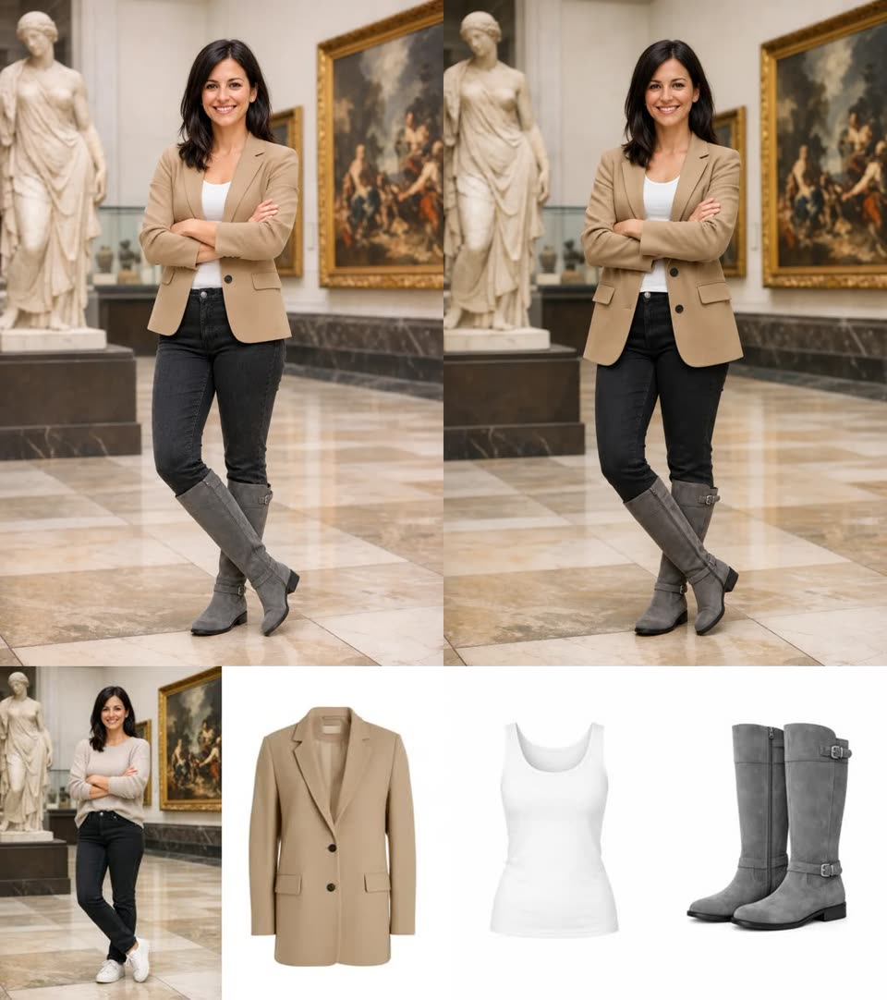

GPT Image 2.6 official outfit swap: a woman in a museum is dressed in a supplied camel blazer, white tank and grey buckle boots without changing her face, pose or background

The official virtual try-on pattern. Four inputs: one person photo plus three garment cut-outs (camel blazer, white tank top, grey knee-high buckle boots). The prompt lists everything that must NOT change (face, skin tone, body shape, pose, identity, background, camera angle, framing, image quality), allows only the clothing to change, and asks for "realistic fabric behavior" with the lighting and colour temperature matched so the outfit isn't "pasted on". It also bans added accessories, text and logos. Useful as a wardrobe-swap template for any model that takes reference images.
Prompt
Edit the image to dress the woman using the provided clothing images. Do not change her face, facial features, skin tone, body shape, pose, or identity in any way. Preserve her exact likeness, expression, hairstyle, and proportions. Replace only the clothing, fitting the garments naturally to her existing pose and body geometry with realistic fabric behavior. Match lighting, shadows, and color temperature to the original photo so the outfit integrates photorealistically, without looking pasted on. Do not change the background, camera angle, framing, or image quality, and do not add accessories, text, logos, or watermarks.
Our Seedance 2.5 adaptation
[ADAPTED for Seedance 2.5 by Grok Bot; not the creator's prompt. Follows the official BytePlus Seedance 2.5 prompt guide and its official sd25-pe prompt-optimizer skill: parameters only on the API line (not in the prompt body), subject + action + scene, then visuals, camera (move, subject, start, direction, arrival) and sound; only the source's own exclusions are kept.] API: duration 8, ratio 9:16, resolution 1080p, generate_audio true. content.role: Image 1 = reference_image (the woman: face, hair, body and pose), Image 2 = reference_image (camel blazer), Image 3 = reference_image (white tank top), Image 4 = reference_image (grey knee-high buckle boots). 【Subject】The woman from Image 1, unchanged in face, skin tone, hairstyle, body shape and expression, wearing the camel blazer from Image 2 over the white tank top from Image 3, dark jeans, and the grey buckle boots from Image 4. 【Action】She stands in a marble-floored museum gallery with her arms crossed, smiles, uncrosses her arms, adjusts the blazer lapel with one hand and shifts her weight from one boot to the other. 【Scene】The gallery from Image 1: a white marble statue on a plinth and gilt-framed paintings. 【Camera】Full-body framing at eye level, locked off, with a slow push-in to knee height by the end. 【Visuals】The garments fit naturally with realistic fabric behaviour; lighting, shadows and colour temperature match Image 1 so nothing looks pasted on. No added accessories, text or logos. 【Sound】Quiet gallery room tone and soft footsteps.
Tags: virtual try-on, outfit swap, identity lock, garment references, camel blazer, tank top, knee-high boots, fabric behaviour, lighting match, no added accessories